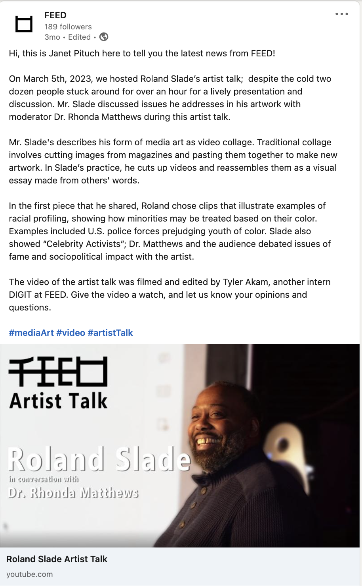

|
I made this project in COMM 270. We were told to pick a picture that we had and to animate it to make a gif. I took a picture of my cats that I had and animated it to make their tails wag and the sun in the background move down. |
|
This is a documentary on my familys auto repair shop. I had to make a video on something that I could get videos and b-roll for. So, I choose to use my families shop and explain the major events that had happen to the shop in the past. |
I made this music video for my class. I used one of my friends songs that he wrote and made scenes that were relatable to him to make soemthing he would like in realation to the song. When creating this I started out silent to bring attention to what the charater was doing. This video means a lot to me even though I was really busy my friends came and gave me a helping hand to complete and finish this video. I wanted this video to be special for my friend that allowed me to use his original song and for the friends that had helped me. |
|  | |||
|
I made this first article to accounce the new addition to Erie, PA. I went into FEED and talked with Benton Bainbridge about the buildings history in our community. As I learned about the history of the building he gave me insight on what he has in store for this building. |
The second article was about an event that happened at FEED and I explained my intake from the form of Media Art that was shown. It was a review for Eric Lennartson and the creation with an oscilloscopes. |
My third article was another review on an event that happened at FEED, this event was with Roland Slade. |
My final was about Noté Peter George and his arrival to town. My article was to give insight on what Noté's art is like and what the community could expect to see when he shows up. |